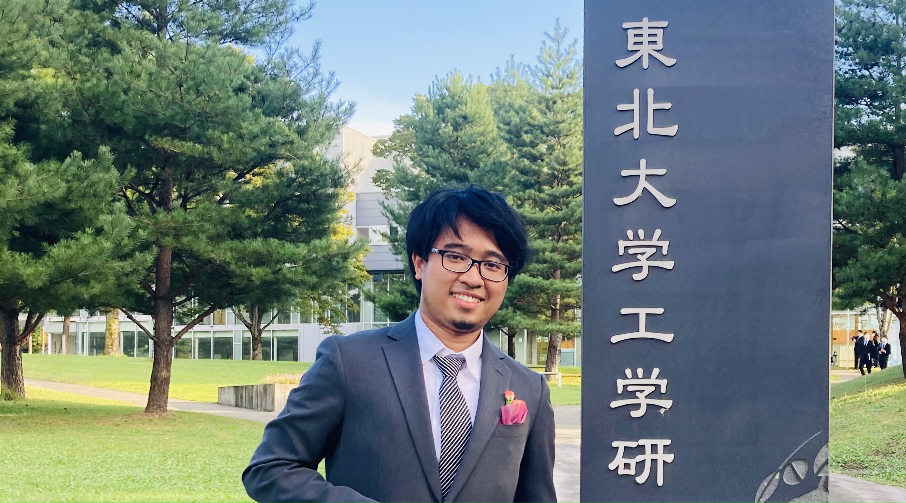
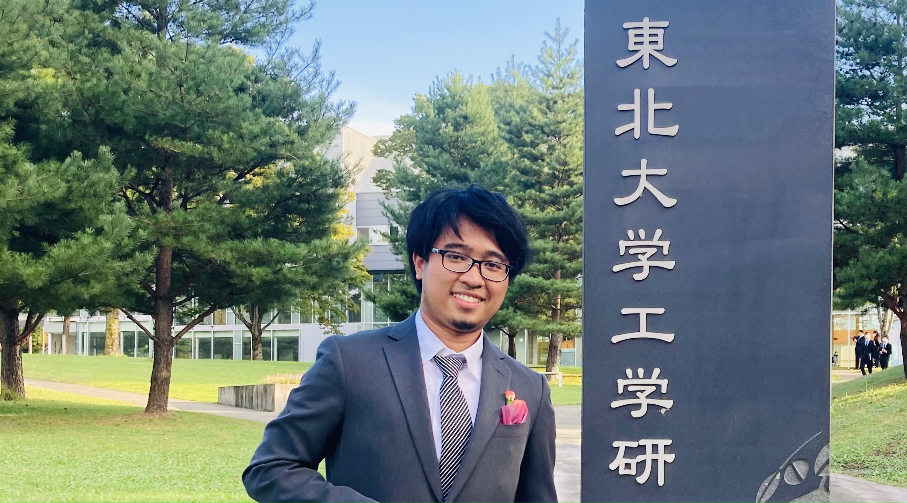
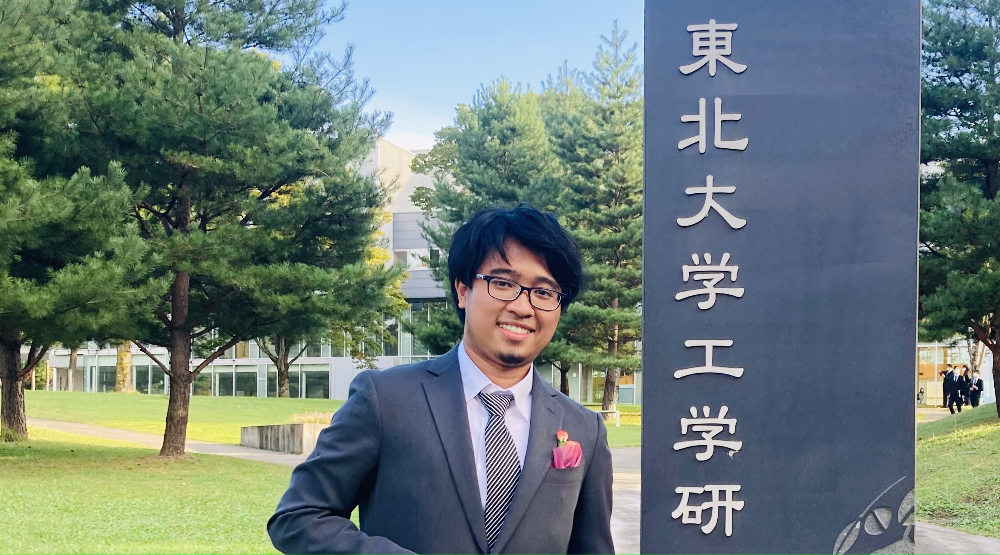

 

Education
-
Master of Engineering, 2023
Tohoku University, Department of Aerospace Engineering
Fluids Engineering with Data Science Laboratory
Committee: Koji Shimoyama (Chair), Shigeru Obayashi, Tomonaga Okabe.
-
Bachelor of Engineering, 2021
Tohoku University, Department of Mechanical and Aerospace Engineering
Fluids Engineering with Data Science Laboratory
Advisor: Koji Shimoyama
Interests
- Aircraft Design
- Machine Learning
- Multidisciplinary Optimization
- Uncertainty Quantification
- Aerostructures
- Urban Air Mobility
- Physics-based Modeling
- Sustainable Aviation
Contact
- muhammad.alfiyandy.hariansyah.s8 [at] dc [dot] tohoku [dot] ac [dot] jp
- alfiyandyhariansyah [at] gmail [dot] com